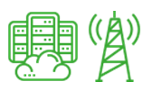
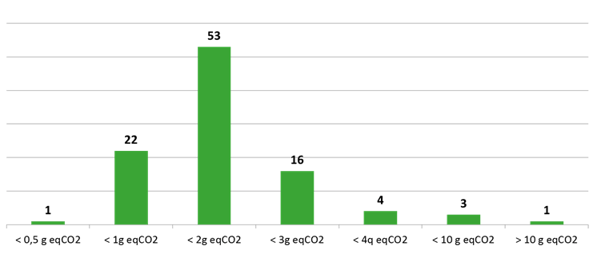
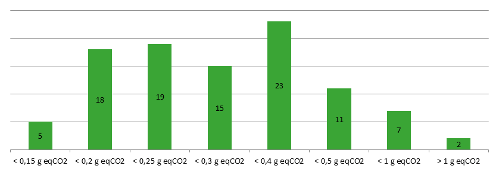
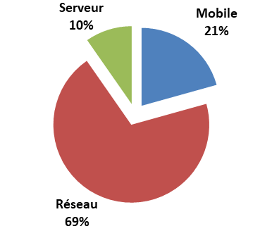
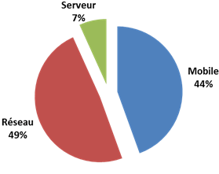
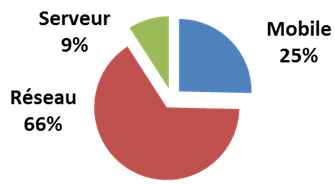
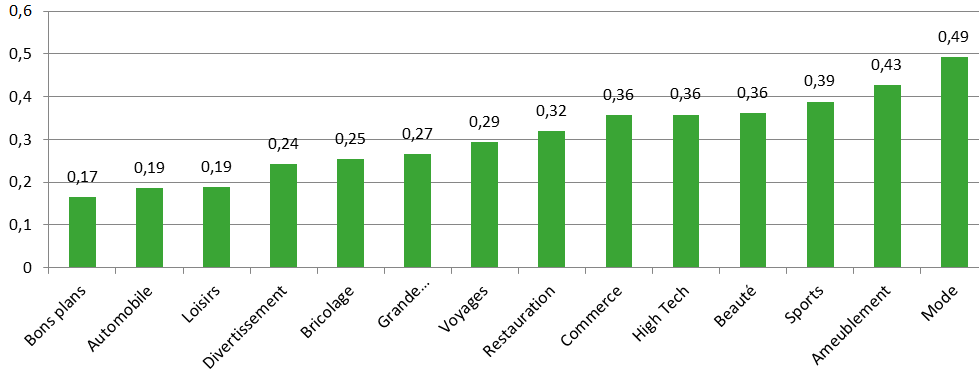
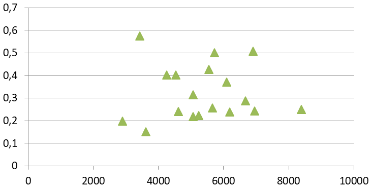
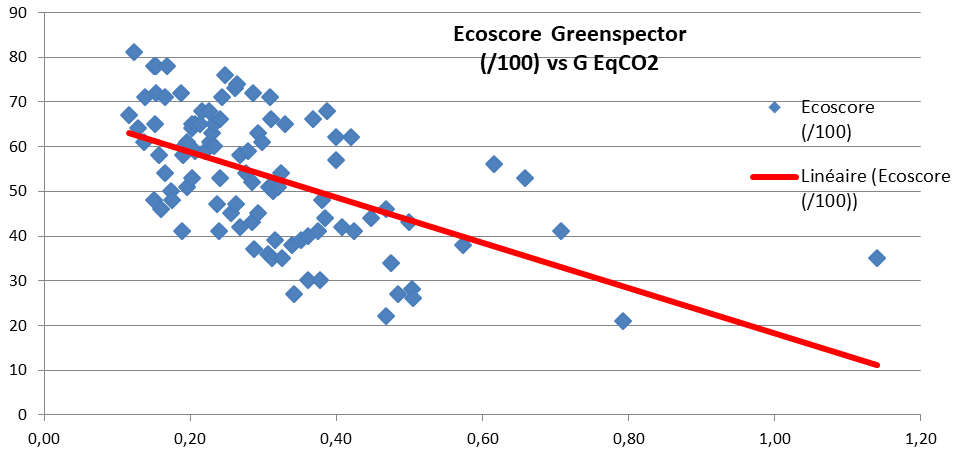

E-commerce sites are high traffic sites (11 million per month) and therefore have an impact reinforced by the volume of use and significant time of use (visit> 5 minutes). In addition, driven by strong growth in e-commerce, longer journey times and more and more mobility, oversized infrastructures to ensure a good level of response time, the e-commerce site makes an ideal candidate for a Carbon assessment of a digital service with environmental responsibility associated with mass services.
Methodology
The assessment scope is based on the impact of the 100 most visited sites in France over the second half of 2019. It is therefore not exhaustive since the calculations do not take into account all the e-commerce sites with lower traffic.
How to assess the Carbon Impact of an e-commerce site?
To know the Carbon impact of an e-commerce web service, we worked on a simplified method based on real measurements.

On the Datacenter and Network side, we project the Carbon Impact from the consumption of data exchanged with the device (OneByte method of the ShiftProject).
On the User device, a real measurement on a mid-range Android smartphone equipped with a Chrome browser is launched 3 times and averaged before being projected with a Carbon impact factor taking into account the following assumptions: WiFi mix – GPS network, 50% brightness, phone battery wear at 500 full charge/discharge cycles.
The average impact of a course (= 1 visit)
The visit, on average of 5 minutes and 28 seconds on an e-commerce website in France on a smartphone device, has a carbon impact of 2 gCO2eq equivalent to 18 meters traveled by a light vehicle. Or 56 visits to an average e-commerce site impact 1 km driven with an average light vehicle.
The distribution of the sites is fairly homogeneous between 0.5 and 3 grams with some extreme values. Nevertheless, there are large differences: from 0.5 g to 34 g EqCO2, -> ie a ratio of X68 between the 100 Top E-Commerce sites in France. These differences can be qualified by taking into account that the visit time varies by a factor of 5 (from 3 to 15 minutes).

When we project the impacts on monthly visits, an e-commerce website has an average carbon impact of 23.8 Tons CO2eq/month.
The sum of the impacts of the top 100 e-commerce sites is 2380 Tons EqCO2/month, the equivalent of the impact of 21 million km of an average car in France or 531 rounds of the Earth by car or 19,636 average vehicles circulating in France corresponding to the fleet of an agglomeration of 40,000 inhabitants.
Projected over one year, it is 28.6 MegaTons Eq CO2!
Average impact of a page
In order to compare e-commerce sites with each other, the visit time or the number of steps or page views during the visit must be isolated. To do this, we go back to the basic measurement of a page for 1 minute.
A page from an e-commerce website in France has an average impact of 0.36 g CO2 eq.
In simple projection: 1,000 pages viewed for 1 minute on an average smartphone have an average carbon impact equivalent to 3.2 km from a light vehicle. The detailed ranking of the Top 100 e-commerce websites is available here. It will be likely to vary during future updates or request for re-measurement.
Breakdown of sites visited
Large difference: from 0.5 g to 34 g EqCO2, i.e. a ratio of X 68 between the 100 top e-commerce sites in France.

To explain this significant variation in impact, we can note that:
- The data consumption ranges from 0.6 MB to 55 MB, or a ratio of X 92, this is the most discriminating factor explaining the differences in impact.
- the energy consumption on the mobile device varies by a factor of 4.7
It is the network part that has the most impact with a share of 69% of the average impact of an e-commerce site on mobile.

If the mobile were replaced by a PC with a wired connection, the “User workstation” part would be much more important. This distribution of impact of course varies with the e-commerce site.
Low impact website case
Compliance with best practices on the network and low consumption on the device
Eco score Greenspector: 81/100, best Eco score of the Top 100 E-Commerce
Equivalent of 161,675 km of a light vehicle for 24.5 million visits / month (Source: Similarweb S2 2019)

Heavy impact website case
No respect for best practices on the network and high consumption on the device
Eco score Greenspector: 21/100, the lowest Eco score of the Top 100 E-Commerce
Equivalent to 44,582 km of a light vehicle for 2.1 million visits/month.

More impactful categories of sites than others?
A ratio of 1 to 3 on the impacts per page between categories

We have about 3 times more carbon impact by browsing a fashion e-commerce site than on an Automotive or Leisure site.
Rq: a single site classified in the Good Plans category
Projected earnings:
If all the sites were aligned with the most virtuous site in our measurements, we could save over a full year:
- 15,177 tonnes of CO2eq, more than half of the impacts
- Or 53% reduction in carbon impact
- The equivalent of 4050 rounds of the earth by car
The major levers for improvement:
E-commerce websites can reduce network volume
- Adapt content to device / type of connection & connection quality
- Compression of rich content
- User cache to avoid content already loaded on a previous visit
- Limit the number of requests (internal, advertising, external services, etc.)
- Beware of unsuitable pre-loads
E-commerce sites that can reduce their energy and battery consumption
- Allow rapid interaction
- Reduction in the consumption of scripts in the pages (3D animation, graphic animation, etc.)
- Reduction of trackers / monitoring
- External services to be evaluated / optimized
- Reduced travel time
- A design / graphics / color to optimize
Correlation analysis of carbon data
Correlation analysis between carbon impact and display performance
By taking 20 values from our sample for which we collected performance data, we can validate that there is no correlation between Carbon impacts and Display performance.

The 2 best performing sites are nevertheless also the least impactful sites
The Carbon indicator is an indicator in its own right for the management of an e-commerce website
Correlation analysis between Impact Carbone and Eco score Greenspector
The estimated Carbon indicator does not take into account other parameters, such as memory consumption, CPU, number of requests, or compliance with good practices, etc.
The Eco score includes both the consumption of resources/energy but also a note on compliance with good practices.

There is a « satisfactory » correlation between the estimated Carbon impact and the measured Ecoscore Greenspector.
Please note, the Carbon indicator does not cover all environmental indicators.